Part 2: Training
10.10 Procedural Lab
This lab walks you through the step-by-step actions that you must follow to compound LVPs using aseptic technique. Take your time. Work through each step methodically and with close attention to detail.
Note: For the purposes of this procedural lab, you will not perform handwashing and PEC cleaning and disinfection procedures unless directed to do so by your instructor. Should your instructor ask you to perform these procedures, refer to Chapter 8 for instructions on handwashing and to Chapter 9 for cleaning and disinfection procedures of a PEC.
Essential Supplies
To complete the Unit 2 procedural labs, you will need to ensure that various essential ante room and buffer room supplies such as those listed in Table 10.2 are available for your use. If you are using a PEC other than a LAFW, you will need to alter some procedures to account for the type of PEC and the direction of airflow coming from the HEPA filter. In this case, refer to instructor direction or facility SOPs for specific instructions regarding this procedural lab.
Procedure-Specific Supplies
In addition to the supplies listed in Table 10.2, gather the following items specific to the Chapter 10 Procedural Lab:
- potassium chloride 2 mEq/mL; 20 mL vial size
- 1,000 mL of NS in an IV bag with a tail injection port
- 20 mL Luer-lock syringe
- regular needle (nonfilter, nonvented needle; 18 gauge to 20 gauge)
- sterile 70% IPA swabs
- tamper-evident, sterile, adhesive seals
- medication order
- CSP label.
| Anteroom Supplies |
|---|
|
|
Note: As mentioned earlier, the Chapter 10 Procedural Lab does not include steps for performing hand-washing procedures. If your instructor directs you to perform handwashing as part of the Chapter 10 Procedural Lab, you will need access to a sink and hand-washing supplies. Refer to Chapter 8 for details on hand hygiene procedures. Remember that, in practice, you must perform hand hygiene procedures prior to preparing a CSP in a sterile compounding area. |
| Buffer Room Supplies |
|
|
Note: As mentioned earlier, the Chapter 10 Procedural Lab does not include steps for the cleaning and disinfection of a PEC. If your instructor directs you to do these procedures as part of the Chapter 10 Procedural Lab, you will need access to PEC cleaning and disinfecting supplies. Refer to Chapter 9 for details on PEC cleaning and disinfection procedures.Remember that, in practice, you must clean and disinfect a PEC prior to preparing a CSP in a sterile compounding area. |
Procedure
Take a careful, deliberate approach to each detailed step of this procedural lab. In practice, using this approach helps to ensure the compounding of a sterile preparation. Refer to instructor directions or facility SOPs to determine whether goggles are required for the procedure and whether sterile gloves should be donned in the anteroom or buffer room.
Note: For steps 1–3, please refer to Chapter 6 for a reminder of the step-by-step procedures required for medication order and CSP label verification. For steps 4 and 5, please refer to Chapter 7 for assistance in performing calculations. For steps 6–9, refer to Chapter 5 for a reminder of the process for gathering and staging supplies. For steps 10–21, refer to Chapter 8 for step-by-step hand hygiene and garbing procedures. For the purposes of this lab, you should perform steps 1–18 and steps 54–56 in the anteroom and steps 20–53 in the buffer room.
Verifying the CSP Label
- Review the CSP label to verify that the patient’s name, room number, and ID number match the information contained on the medication order. To help you with this task, compare the CSP label (see Figure 10.7) to the medication order and patient ID label (see Figure 10.8).
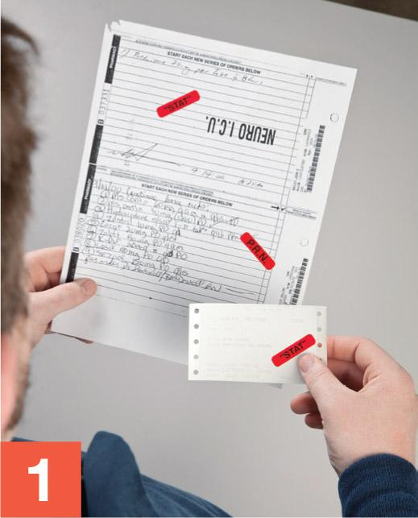
George Brainard/© Paradigm Education Solutions - Check the CSP label to verify that the additive name (in this case, potassium chloride or KCl) and dosage match what is on the medication order.
- Scan the CSP label to verify that the base solution name (in this case, sodium chloride 0.9% solution), strength, and volume, as well as the IV flow rate, match what is on the medication order.
View long description Hide description
The label reads as follows: large-volume parenteral, memorial hospital, patient name, room, patient ID number, RX number. Potassium chloride 30 moles equivalent, sodium chloride 0.9 percent 1000 milliliters, rate: 62.5 milliliters per hour. Keep refrigerated. Warm to room temperature before administration. This is a compounded preparation. Add bottom: B U D, tech, and R P h.
FIGURE 10.7 CSP Label for Potassium Chloride Potassium chloride is an electrolyte that is essential to the proper function of the human body. © Paradigm Education Solutions
Calculating Desired Volume
- Read the label on the potassium chloride vial to determine the concentration of the solution.
-
Perform the calculations based on the information provided on the potassium chloride label. Provided that the label indicates that potassium chloride has a concentration of 2 mEq/mL, use the following formula to calculate the dose:
\[\frac{2 \, \mathrm{mEq}}{1 \, \mathrm{~mL}}=\frac{30 \, \mathrm{mEq}}{x \, \mathrm{~mL}}\]
Cross-multiply and then divide to solve for x or the desired dosage volume. (For additional assistance, refer to Chapter 7 for step-by-step dosage calculation procedures.)
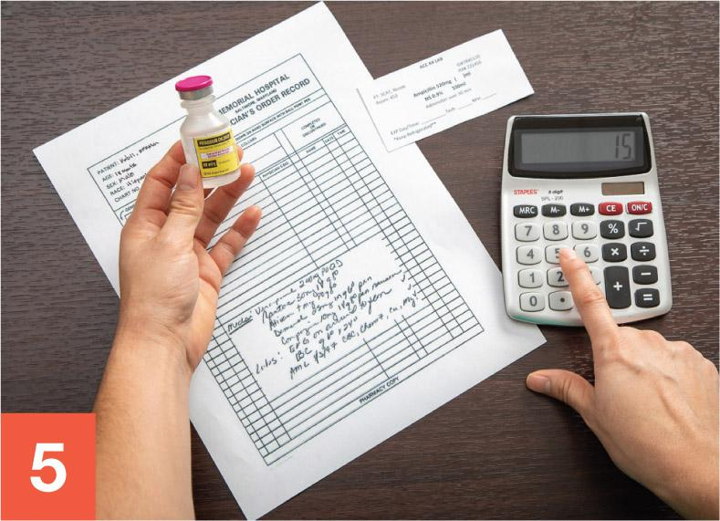
George Brainard/© Paradigm Education Solutions
Gathering and Staging Supplies
- Place the medication order into a large plastic bag and the CSP label into a small plastic bag. Gather all supply items listed in the Supplies sections of the procedural lab.
- Using one or more low-lint wipers presaturated with sterile 70% IPA, thoroughly wipe down the entire transport vehicle. Then discard the used wiper(s) into the waste container.
- Before crossing into the clean side of the anteroom, use a new, low-lint wiper presaturated with sterile 70% IPA to wipe the surface of the IV bag’s dust cover. Then place the IV bag on the transport vehicle.
- Repeat the procedure outlined in step 8 with each of the remaining supply items.
View long description Hide description
The information is as follows: ID number, name, DOB, room, and doctor. A table at left shoes 4 columns for date, time, orders, and physician signature. Information above the left table includes allergy or sensitivity to and diagnosis. A table at the right for completed or discontinued status shows name, date, and time.
FIGURE 10.8 Medication Order The prescriber of this medication order has ordered an LVP that has sodium chloride as a base solution and potassium chloride as an additive. © Paradigm Education Solutions
Garbing and Transport of Supplies
- Don shoe covers while stepping over the line of demarcation into the clean side of the anteroom.
- Don a head cover.
- Don a face mask.
- Don a facial hair cover (if needed).
- Don goggles for eye protection (if needed).
Note: For the purpose of this training lab, you will skip handwashing, unless told otherwise by your instructor.
- Don a gown.
- Apply an alcohol-based hand rub to all surfaces of your hands and allow your hands to dry thoroughly.
- Don sterile gloves.
- Apply sterile 70% IPA to all surfaces of your gloves and allow your gloved hands to dry thoroughly.
- Use a transport vehicle to bring all supply items into the buffer room.
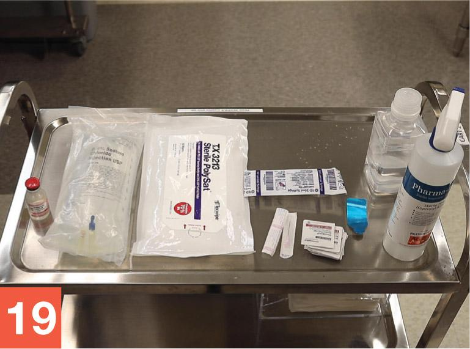
George Brainard/© Paradigm Education Solutions - Place the items from the transport vehicle onto a table or cart within the buffer room. If a cart is used, position it so that it does not interrupt airflow into the PEC’s prefilter.
-
Apply sterile 70% IPA to all surfaces of your gloves and allow your gloved hands to dry thoroughly.
Note: For the purposes of this training lab, you will skip the cleaning and disinfection of the PEC, unless told otherwise by your instructor.
Compounding the LVP Solution
- Tear open the dust cover and remove the IV bag of NS solution. Place the bag into the DCA of the PEC and discard the dust cover into the waste container.
- Use low-lint wipers and sterile 70% IPA to wipe each remaining supply item just before introducing the item into the outer six-inch zone of the PEC.
- Remove the plastic, flip-top cap from the potassium chloride vial by holding the vial in your hand and forcing the cap upward with your thumb or fore finger. Remove the cap that covers the vial stopper and place the cap into the start of a discard pile. Place the vial into the DCA so that it receives uninterrupted airflow from the PEC’s HEPA filter.
- Tear open the package of a new, sterile 70% IPA swab while holding it within the DCA. Remove the swab and wipe the vial stopper by holding the vial and then rubbing the swab once or twice across the vial stopper. Place the used swab and the empty swab package into the discard pile.
- Remove the 20 mL syringe from its outer wrapper. If necessary, remove the cap from the syringe tip, sometimes called the hub of the syringe. Place the syringe wrapper and cap into the discard pile.
- Tear open the package of a sterile 70% IPA swab while holding it within the DCA. Remove the swab and place it onto the PEC’s work surface so that it receives uninterrupted airflow from the HEPA filter. Place the empty swab package into the discard pile in the outer six-inch zone of the PEC.
- Without touching or shadowing the syringe tip, grasp the barrel of the syringe in your dominant hand, keeping the syringe’s position within the DCA. Be sure that the syringe tip receives uninterrupted airflow from the HEPA filter.
- While holding the barrel of the syringe in one hand, use the fingers of both hands to carefully peel apart the needle packaging. Take care not to touch or shadow the needle hub at any time during the removal of the capped needle from its packaging. Using a twisting motion, gently screw the capped needle hub onto the syringe tip.
- While using your one hand to hold the capped needle-and-syringe unit in the DCA of the PEC, use your other hand to place the empty needle packaging into the discard pile in the outer six-inch zone of the PEC.
- Use your free hand to pull down on the flat knob of the plunger to draw approximately 15 mL of air into the syringe.
- While using a steady, firm grip, position the capped needle-and-syringe unit as you would a dart. Pull the needle cap carefully but firmly off of the needle. Place the needle cap on top of the IPA swab on the PEC’s work surface. The open end of the cap should be facing the PEC’s HEPA filter.
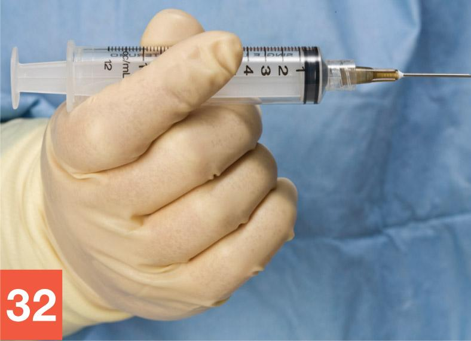
George Brainard/© Paradigm Education Solutions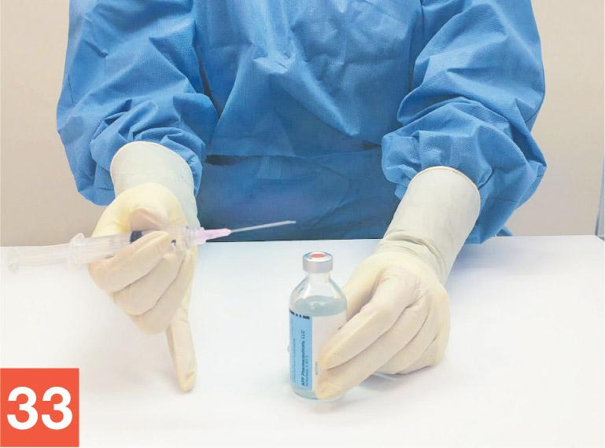
Shannon Bui/© Paradigm Education Solutions - Using your other hand, brace the potassium chloride vial against the PEC’s work surface. To stabilize the needle-and-syringe unit for vial insertion, you may want to use the pinkie as a “kickstand” on the DCA.
- Use your fingers to rotate the barrel of the syringe so that the bevel of the needle is pointed up toward the ceiling. Place the tip of the needle, bevel up, onto the center of the vial stopper.
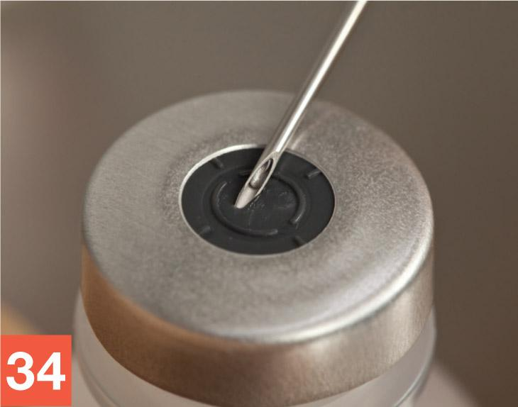
George Brainard/© Paradigm Education Solutions - Insert the needle into the vial using a slight upward rotation of the wrist (rotating in a counterclockwise direction if you are right-handed and in the opposite direction if you are left-handed). Keep the tip of the needle in contact with the vial stopper at all times. There should be a slight, almost imperceptible, bend to the needle as it enters the vial.
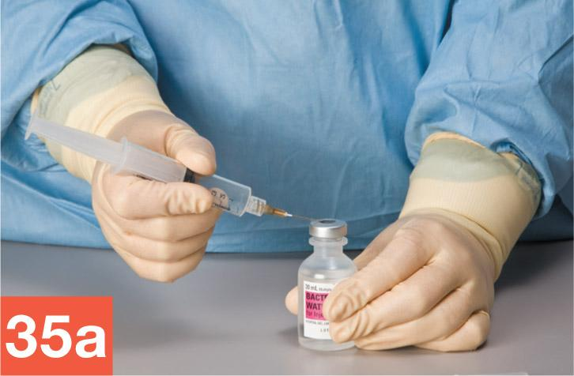
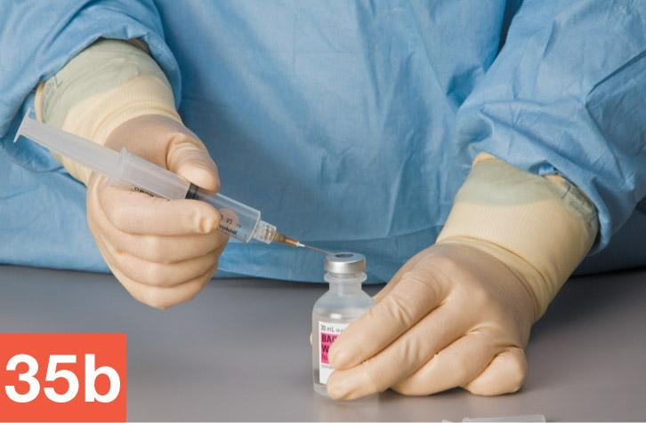
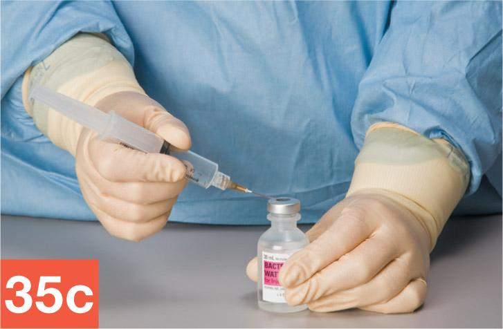
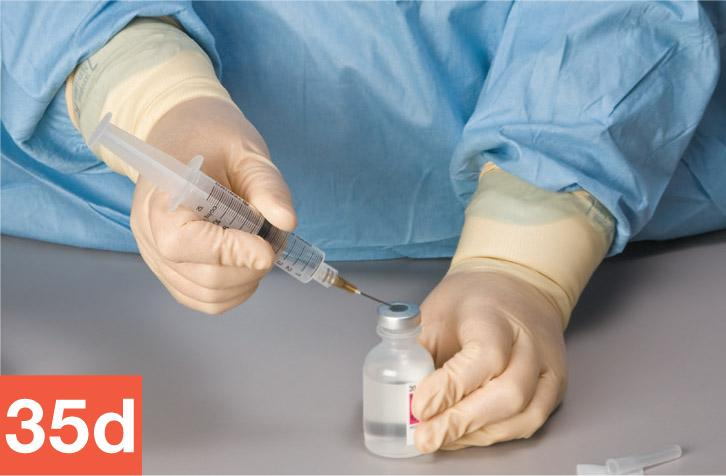
George Brainard/© Paradigm Education Solutions - Hold the potassium chloride vial with your one hand and the syringe, with needle firmly inserted into the vial, with your other hand. Invert the vial so that the needle-and-syringe unit is now below the vial.
- Use your thumb to gradually push up on the flat knob of the plunger to inject a small amount of air (approximately 5 mL) into the potassium chloride vial, creating a slight positive pressure within the vial. Release the plunger and allow fluid to flow into the syringe. Repeat this milking process until you have a minimum of 16 mL of potassium chloride solution in the syringe.
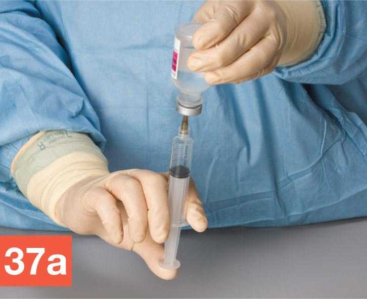
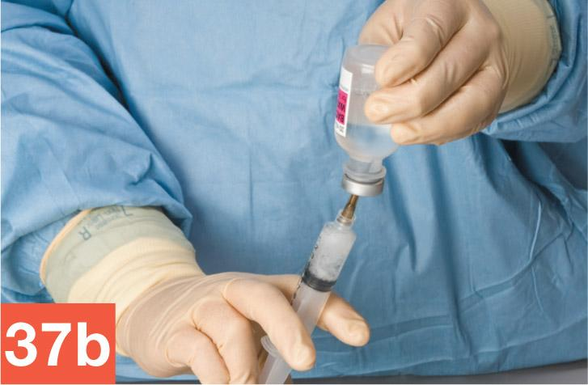
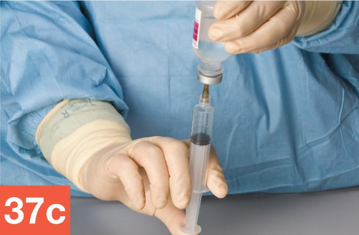
George Brainard/© Paradigm Education Solutions - While ensuring that the needle remains entirely within the vial, hold the vial between the thumb and forefinger of your hand, allowing the barrel of the syringe to rest against the palm of that hand. Be sure to position your other hand in a manner that continues to allow airflow to the critical site. Then use your other hand to tap the barrel of the syringe with your fingers to force air bubbles within the fluid up toward the tip of the syringe. (Alternatively, you can tap the barrel of the syringe against the work surface.) Take care to perform this action in such a way that you do not bring your hand between the critical site and the PEC’s HEPA filter at any time.
- Push up on the flat knob of the plunger with the thumb of your hand to expel the air bubbles that have gathered near the tip of the syringe, along with any extra fluid, including the extra 1 mL of fluid that was drawn up to facilitate bubble removal.
- Verify that the syringe now contains the desired amount of additive. (For this dose, the desired volume is 15 mL.)
- While keeping the needle firmly inserted in the vial, return the vial and syringe to the original starting position, with the upright vial braced against the PEC’s work surface and your hand grasping the barrel of the inverted syringe. Slowly remove the needle-and-syringe unit from the additive vial. Remember to avoid touching the inner plunger at any time while removing the needle-and-syringe unit from the vial.
- Carefully recap the needle and place the capped needle-and-syringe unit onto the PEC’s work surface, within the DCA.
- Position the IV bag, potassium chloride vial, and filled needle-and syringe unit for a verification check.
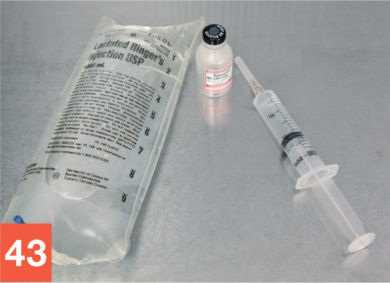
George Brainard/© Paradigm Education Solutions - Position the medication order and CSP label in the outer six-inch zone, immediately in front of the CSP ingredients.
Note: The medication order and CSP label must remain in their plastic bags until compounding procedures are complete.
- Ask for a verification check by a pharmacist or your instructor. Once the verification check is complete, wipe your gloved hands with sterile 70% IPA. Then reposition the items prior to injecting the medication into the IV bag.
George Brainard/© Paradigm Education Solutions
- Move the vial to the side of the PEC, away from the IV bag. Reposition the IV bag so that the tail injection port receives uninterrupted airflow from the PEC’s HEPA filter. Open the package of a new, sterile 70% IPA swab within the DCA, remove a swab, remove a swab, and wipe the injection port of the bag. Place the used IPA swab on the work surface directly under the injection port. Place the empty swab package into the discard pile.
- Hold the barrel of the syringe in your dominant hand. Remove the cap of the needle and place the needle cap onto the IPA swab you placed on the PEC’s work surface in step 27.
- Hold the injection port steady with your one hand, taking care to avoid shadowing or touching the injection port.
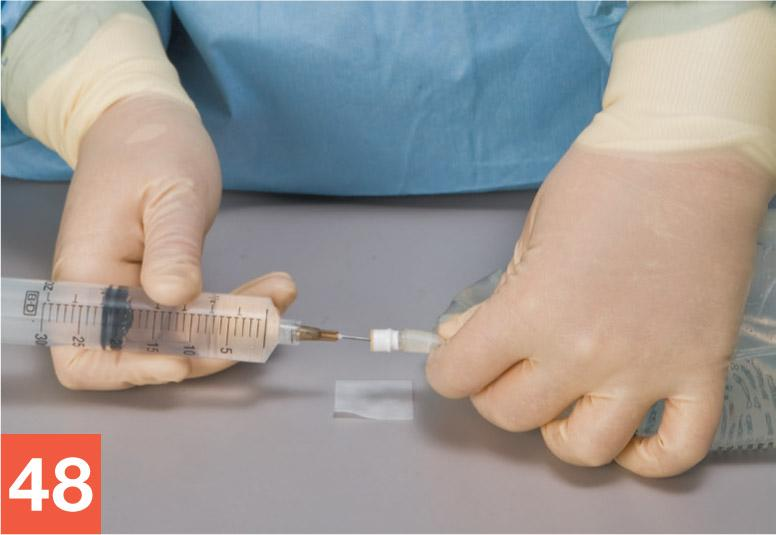
George Brainard/© Paradigm Education Solutions - Inject the additive into the IV bag by pressing on the flat knob of the plunger with the thumb or forefinger of your other hand.
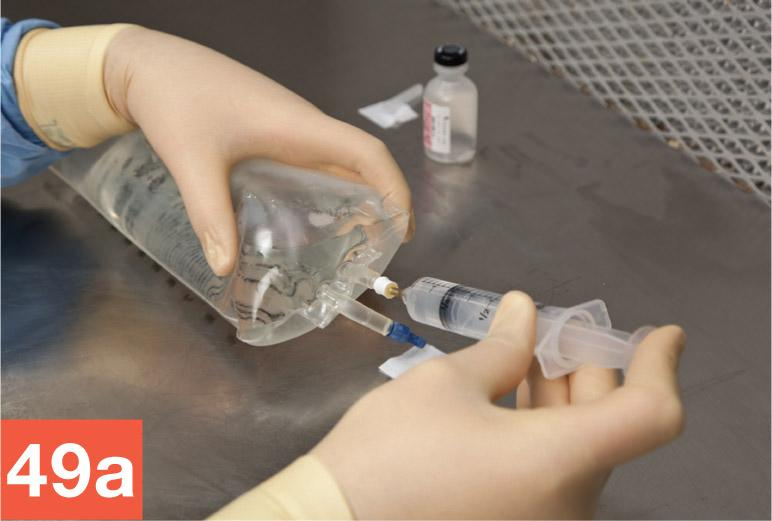
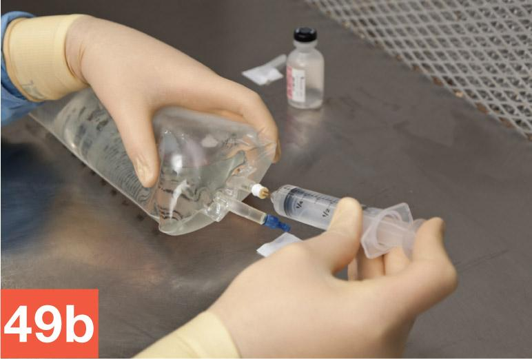
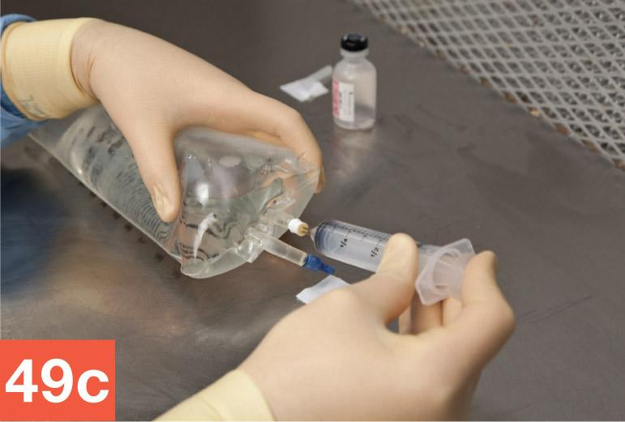
George Brainard/© Paradigm Education Solutions -
Holding only the barrel of the syringe, carefully remove the needle-and-syringe unit from the IV bag.
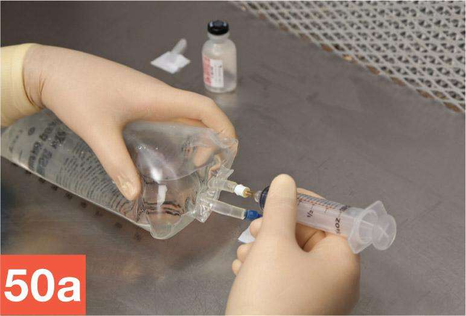
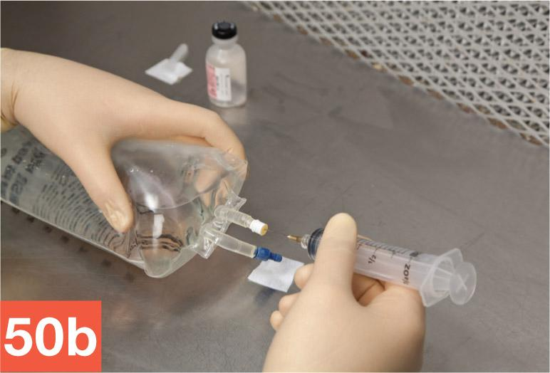
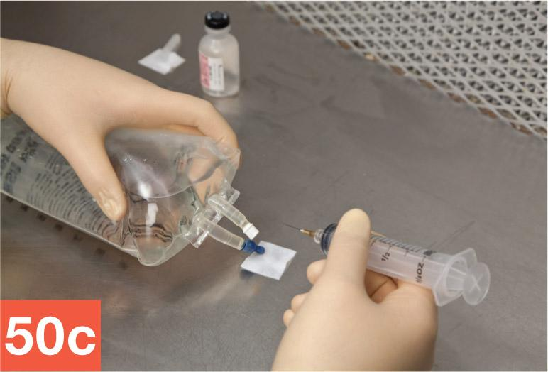
George Brainard/© Paradigm Education Solutions - Discard the needle-and-syringe unit into the sharps container.
- Wipe sterile gloves with sterile 70% IPA and allow to dry thoroughly. Open the package of a new, sterile 70% IPA swab, remove a swab, and wipe the injection port. Discard the empty package into the discard pile. Apply a tamper-evident, sterile, adhesive seal to the port. Squeeze the IV bag and examine it for leaks, precipitates, or evidence of incompatibility. Then remove the CSP label from the plastic bag and affix the label to the IV bag.
Cleaning Up after the Procedure
- Dispose of the waste from the discard pile and any other nonsharps waste into the regular waste container. Discard any remaining used swabs and the needle cap into the waste container. Place the vial and CSP into the transport vehicle and return the items to the anteroom to complete the compounding procedure.
- Once in the anteroom, record the BUD and your initials in the proper location on the CSP label. Record the BUD on the vial of potassium chloride and place it in an appropriate storage location.
- Remove your garb according to standard procedures. (Refer to Chapter 8 for the step-by-step garb removal process). Return any unused supply items to their proper locations.
- Await a directive from your instructor regarding the completed CSP. In practice, you would follow your facility’s protocol and either place the CSP in the proper storage location (refrigerator, shelf, etc.) or deliver the CSP to be administered to a patient or appropriate nursing unit.